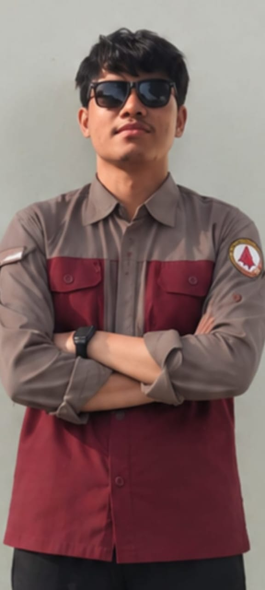

Mengenal Teorema Pythagoras
Siapakah Pythagoras? Ia adalah matematikawan dan filsuf Yunani kuno yang menemukan rahasia ajaib segitiga siku-siku: luas persegi pada sisi miring sama persis dengan jumlah luas persegi kedua sisi siku-sikunya!
Biografi Pythagoras dari Samos (±570 – 495 SM)
Tokoh filsuf dan matematikawan pelopor ilmu geometri Yunani kuno.
Pythagoras
±570 SM – ±495 SMLahir di Pulau Samos, Ionia (Yunani Kuno)
Pythagoras berkelana ke Mesir dan Babilonia untuk mempelajari matematika kuno, astronomi, dan teknik perbintangan.
Di Kroton (Italia Selatan), ia mendirikan akademi tempat para filsuf dan muridnya mendalami harmoni nada dan angka.
Meskipun segitiga tali sudah dipakai di Mesir, Pythagoras adalah sosok pertama yang membuktikan relasi a² + b² = c² secara matematis!
Tujuan Pembelajaran
Klik pada setiap nomor di bawah untuk membaca uraian dan capaian kompetensinya:
Uraian Capaian: Peserta didik dapat mengidentifikasi komponen segitiga siku-siku dengan tepat:
- Sisi Siku-siku (a dan b): Dua sisi yang saling tegak lurus mengapit sudut 90°.
- Hipotenusa (c): Sisi miring yang berada tepat di hadapan sudut siku-siku dan selalu menjadi sisi terpanjang.
Uraian Capaian: Peserta didik mampu membuktikan kebenaran Teorema Pythagoras secara visual melalui luas daerah persegi, serta menghitung panjang sisi segitiga siku-siku:
Uraian Capaian: Peserta didik mampu menentukan dan membuktikan tiga bilangan bulat positif yang memenuhi relasi kuadrat sisi siku-siku, seperti (3, 4, 5), (5, 12, 13), (7, 24, 25), dan (8, 15, 17) beserta kelipatannya.
Uraian Capaian: Peserta didik mampu menerapkan prinsip Teorema Pythagoras dalam memecahkan soal cerita dan masalah kehidupan nyata, seperti menghitung panjang jembatan pada jurang, jarak diagonal lapangan, dan tinggi tangga yang bersandar di dinding.
1. Anatomi Segitiga Siku-Siku
Hanya berlaku pada segitiga yang mempunyai satu sudut 90° (siku-siku).
-
●
Sisi Siku-Siku (a & b): Saling tegak lurus mengapit sudut 90°.
-
●
Hipotenusa (c): Sisi terpanjang yang berada tepat di hadapan sudut siku-siku.
2. Rumus Utama Pythagoras
Kuadrat sisi miring sama dengan jumlah kuadrat sisi tegaknya:
a = √(c² - b²)
b = √(c² - a²)
3. "Cheat Sheet" Tripel
Tiga angka bulat ajaib yang sering keluar di ujian tanpa perlu akar manual:
Kenapa Luas Persegi Membuktikan Pythagoras?
Pilih segitiga di bawah dan perhatikan luas kotak di tiap sisinya:
Luas Persegi A + Luas Persegi B = Luas Persegi C (Terbukti 100% sama)!
Ubah Ukuran Sisi Siku-Siku
Geser slider atau tekan tombol (+/-) untuk mengubah panjang alas & tinggi secara bebas!
Rumus: c = √(a² + b²)
c² = 6² + 8²
c² = 36 + 64 = 100
Bantu Robi Menyeberang!
Hitung panjang jembatan (c) dengan rumus Pythagoras agar pas dan aman!
Rumus: c = √(a² + b²)
Kuis Cepat Teorema Pythagoras
Uji logika matematika dan pemahaman soal cerita kamu!
Memuat soal...
Hasil Kuis Evaluasi
Berikut nilai pencapaianmu dalam Teorema Pythagoras:
Luar biasa! Pemahaman konsep dan hitungan segitiga siku-sikumu sudah sangat hebat!
Guru AI & Simulator Misi
Teman belajar matematika SMP pribadimu! Konsultasikan soal PR, minta tips cepat, atau buat soal cerita seru baru.
Guru Pythagoras AI
Tutor matematika SMP yang sabar & bersahabat
Ketik pertanyaanmu di bawah yuk! Kamu juga bisa mengetik langsung angka soalmu, contoh: "alas 6 tinggi 8 cari sisi miring".
Ciptakan Misi Cerita Pythagoras
Pilih tema petualangan di bawah untuk memunculkan tantangan cerita nyata baru!
Judul Misi
Memuat cerita...
Menyiapkan tantangan cerita dan angka yang pas...
10 Kata-Kata Matematika: Motivasi & Gombalan
Matematika bukan cuma rumus kaku dan angka rumit! Temukan inspirasi belajar yang membakar semangat serta gombalan segitiga siku-siku yang bikin tersenyum manis.
"..."
Identitas Pengembang & Pembimbing
Media pembelajaran matematika interaktif PythaQuest (Petualangan Teorema Pythagoras) ini disusun dan dikembangkan sebagai sarana belajar aktif, kontekstual, dan menyenangkan bagi peserta didik SMP Kelas 8.
Rahma Ramadhani, M.Pd.
Pembimbing penyusunan materi, metodologi pedagogis, serta perancangan media pembelajaran interaktif matematika berbasis Kurikulum Merdeka.
Mahasiswa Pengembang

Usman Riyanto
Fokus pada perancangan logika interaktif, visualisasi kanvas segitiga, implementasi kalkulasi Pythagoras, dan sistem simulasi game.
Fitri Puspita Anggraini
Fokus pada penyusunan modul materi pembelajaran, kurasi soal kontekstual, desain antarmuka responsif pengguna, serta integrasi evaluasi kuis.
Aplikasi ini dirancang sebagai inovasi media ajar interaktif untuk materi Teorema Pythagoras (Matematika Fase D / Kelas 8 SMP). Dilengkapi visualisasi geometri dinamis, simulasi pemecahan masalah kehidupan nyata, kuis evaluasi berbasis penalaran, serta asisten edukasi berbasis AI.